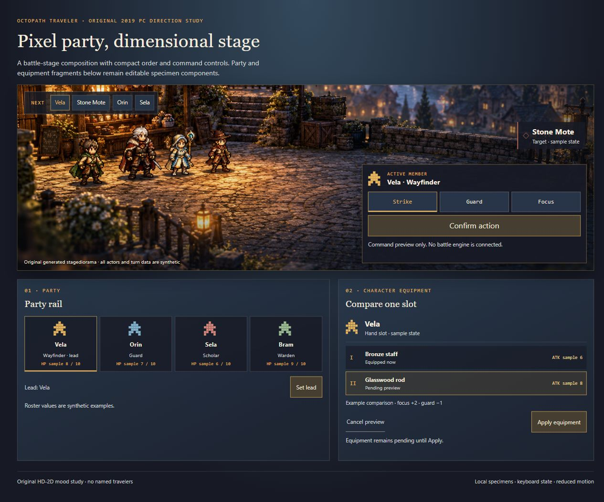
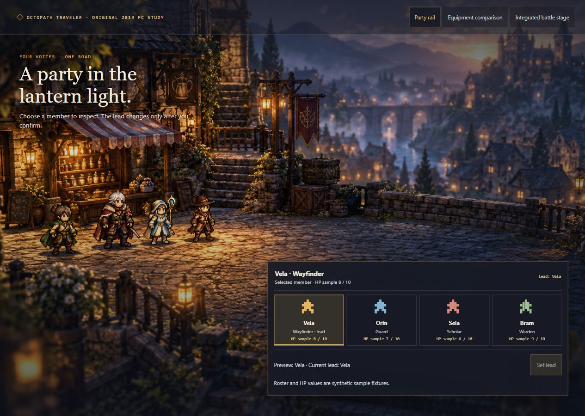
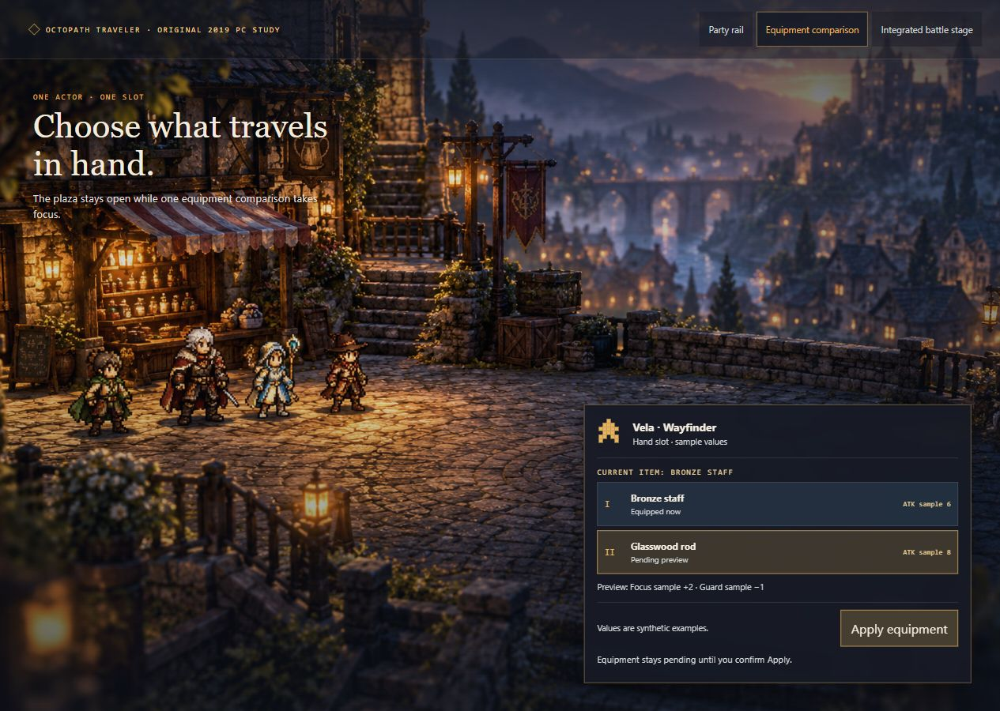
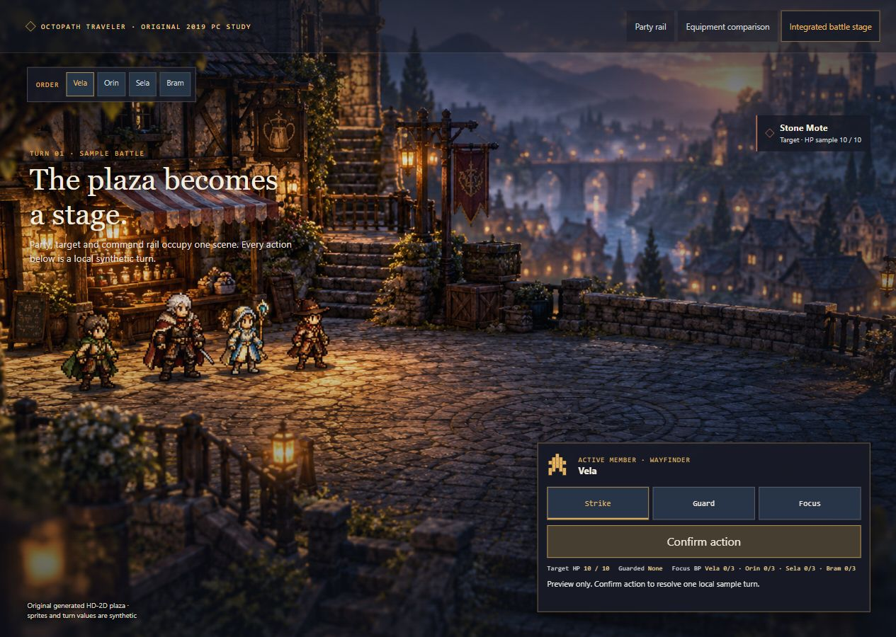

Game UI
Game UIOCTOPATH TRAVELER / V1.0.0
歧路旅人
一套规则，多种界面。
像素人物、立体舞台、景深光照与克制的角色命令菜单。。
2019 PC 版 / 第一作
实验性参考包 · Luna / max 作者与独立使用代理 · 本地 Web 示例

查看包内组件样品 ↗01 / INDEPENDENT IMPLEMENTATION
同一 Skill 的三个界面
浏览器检查已完成；具体交互和屏宽记录见 JSON。

PARTY
Party rail ↗
A compact roster marks the selected member and keeps lead changes behind an explicit action.

CHARACTER-EQUIPMENT
Equipment comparison ↗
One actor and gear slot are compared at a time, with separate Apply and Cancel controls.

BATTLE-ORDERS
Integrated battle stage ↗
Turn order and command choices sit inside one layered stage while the actors remain visible.
02 / WHAT YOUR AI READS
参考、组件、规则，一起交给 AI。

示例需求
使用 octopath-traveler-ui Skill。先读取 SKILL.md、视觉规则、组件和参考图，再为我的游戏制作：Party rail、Equipment comparison、Integrated battle stage。复用本地素材，保留可编辑文字和真实交互状态。
04 / EVIDENCE AND LIMITS
制作记录与验证范围
HD-2D 主要是运行画面的表现，不等价于特殊菜单；需与现有 FFVII、绿宝石比较新增价值。
- Original generated party and plaza are an HD-2D mood study, not official OCTOPATH TRAVELER art or exact characters.
- Party names, equipment, turn order, and values are synthetic interface fixtures.
- The Web specimen does not run combat, persist state, or export a game-engine scene.
独立代理按冻结输入制作，均为 Luna / max。实验仅覆盖 Web 原型；游戏名称标识参考方向。未验证跨模型稳定性、引擎导出或 Figma 文件。素材与许可见包内来源记录。